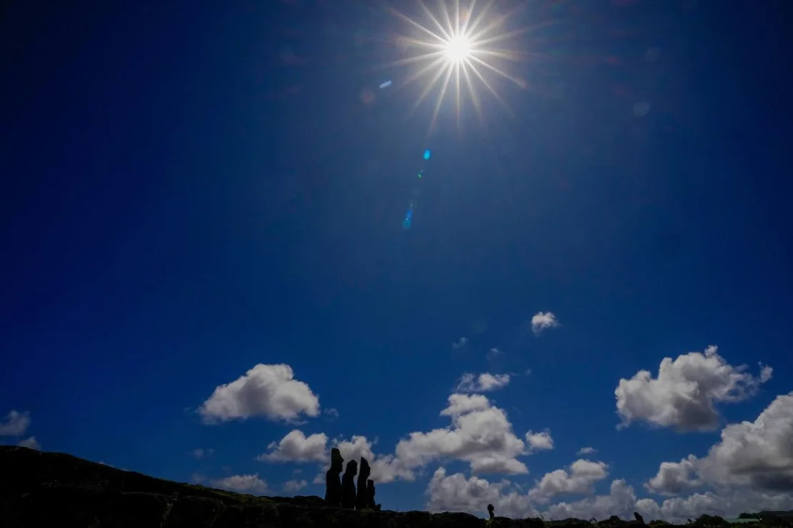

El eclipse solar crea un "anillo de fuego" en partes de Sudamérica
Un eclipse solar anular se observó en partes de Sudamérica este miércoles, creando un deslumbrante "anillo de fuego" en el cielo.
Los eclipses solares anulares ocurren cuando la luna pasa entre la Tierra y el Sol y la Luna está cerca o en el punto más lejano de su órbita desde la Tierra. La Luna no bloquea completamente el Sol como lo hace durante un eclipse solar total, lo que causa el efecto de anillo de fuego.
 Leer más